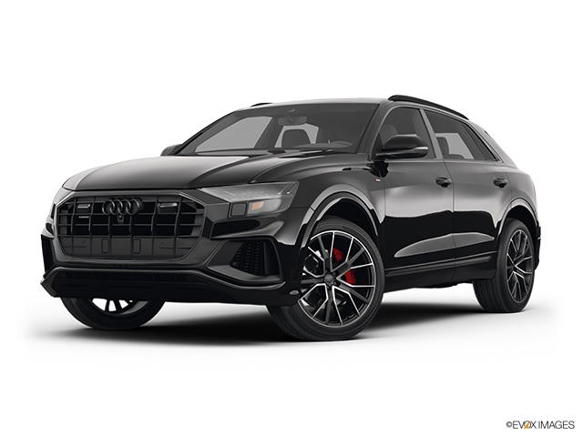

Audi Q8 bemutatása
Áttekintés
Az Audi Q8 az Audi SUV kínálatának csúcsmodellje, amely a prémium szegmensben a sportos dizájnt és a funkcionális eleganciát ötvözi. A Q8 karakteres megjelenését a dinamikus vonalak, a széles hűtőrács és a merész hátsó lámpák jellemzik, ami az autót azonnal felismerhetővé teszi. Az építése során alkalmazott nagy teherbírású anyagok és a modern gyártási technológia biztosítják a tartósságot és a biztonságot. Az Audi Q8 nemcsak esztétikailag vonzó, hanem tágas belső teret is kínál, amely ideális a családi vagy hosszú utazásokhoz.
Teljesítmény és technológia
Az Audi Q8 különböző motorválasztékokkal érhető el, beleértve a benzines és dízel motorokat is, amelyek kiemelkedő teljesítményt és hatékonyságot nyújtanak. A quattro összkerékhajtásnak köszönhetően a Q8 kiváló tapadást és stabilitást biztosít, bármilyen időjárási körülmények között. A legújabb technológiai újítások, mint például az Audi virtual cockpit és a MMI touch response rendszer, lehetővé teszik a vezető számára, hogy könnyedén kezelje a jármű funkcióit, miközben a digitális kijelzők intuitív módon jelenítik meg az információkat. Az autó sportos vezetési élményt nyújt, amely a dinamikus felfüggesztésnek és a különböző vezetési üzemmódoknak köszönhető.
Kényelem és luxusszolgáltatások
Az Audi Q8 belső tere prémium anyagokkal és kiváló minőségű kidolgozással büszkélkedhet, amely az utasok kényelmét szolgálja. A tágas kabinban az ergonomikus ülések és a modern dizájn gondoskodik a maximális kényelemről, míg a legújabb multimédia rendszerek szórakoztató élményt nyújtanak az utazások során. A Q8 számos luxusszolgáltatást kínál, beleértve a klímaszabályozást, a prémium hangrendszert és a bőrkárpitokat, amelyeket az ügyfelek egyedi igényeik szerint testre szabhatnak. Ezen felül a Q8 fejlett biztonsági és vezetést segítő technológiákkal van felszerelve, amelyek növelik az utazás biztonságát és kényelmét, beleértve a parkolóasszisztenst és a különböző érzékelő rendszereket.
Vissza a főoldalra
Készítette: Tóth Sebestyén